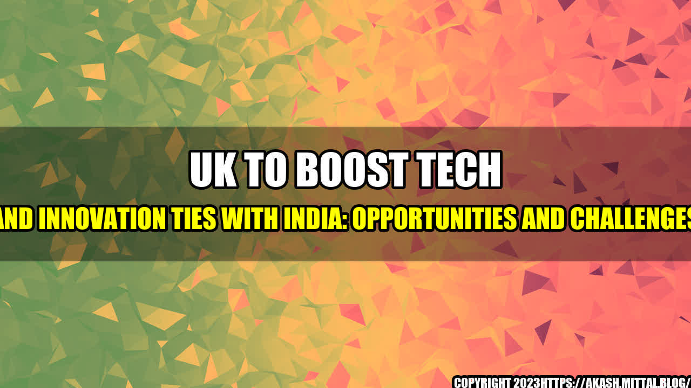

UK to Boost Tech and Innovation Ties with India: Opportunities and Challenges
London-based tech entrepreneur and investor, Stephen Kelly, fondly recalls his first trip to India in the late nineties. Kelly had just set up his own start-up for HR software, and he was keen to explore the Indian market for international expansion. He quickly realized that the Indian tech sector was vibrant and ripe with potential, but there were also many challenges. "The infrastructure was poor, the bureaucracy was stifling, and corruption was rife," Kelly says. "But despite all that, I was impressed by the entrepreneurial spirit, the thirst for knowledge, and the sheer energy of the Indian people. I knew that India was going to be a major player in the global tech scene."
Fast forward to 2021, and India is indeed a major player in the global tech scene. It is the world's second-largest internet market, with over 687 million internet users. It ranks third globally in terms of the number of unicorns (start-ups valued at more than $1bn), after the US and China, with 38 unicorns as of January 2021. India has also emerged as a hub for research and development in cutting-edge fields such as artificial intelligence, machine learning, and fintech.
Little wonder, then, that the UK government is keen to strengthen ties with India in the tech and innovation sectors. In April 2021, UK Prime Minister Boris Johnson and Indian Prime Minister Narendra Modi announced a new Enhanced Trade Partnership (ETP) between the two countries, which includes a roadmap for closer collaboration on innovation and technology, as well as investment and trade.
Opportunities ahead
There are several areas of opportunity for UK-India tech collaboration, according to a recent report by Frost & Sullivan. One of them is fintech, which has seen explosive growth in India in recent years. The report notes that the UK and India are both advanced in fintech innovation, and can learn from each other's strengths. For example, UK fintech firms could leverage the huge untapped market of underbanked and underserved customers in India, while Indian fintech firms could benefit from the UK's expertise in regulatory compliance and open banking.
Another area of opportunity is AI and machine learning, where India has made impressive strides in recent years. The report predicts that India's AI market will grow at a compound annual growth rate of 27.1% from 2020 to 2025, driven by factors such as increasing adoption of cloud computing, big data analytics, and the Internet of Things (IoT). The UK, on the other hand, has a longstanding tradition of academic excellence in AI and machine learning, with world-class institutions such as Oxford, Cambridge, and Imperial College. Collaboration between UK and Indian researchers and start-ups in AI and machine learning could lead to breakthroughs in areas such as healthcare, agriculture, and transportation.
Other areas of opportunity identified by the Frost & Sullivan report include smart cities, cybersecurity, e-commerce, and edtech. For each of these areas, the report highlights specific challenges and opportunities for UK-India collaboration.
Challenges to overcome
While there are many opportunities for UK-India tech collaboration, there are also several challenges that need to be addressed. One of them is the issue of talent. Both the UK and India are facing a shortage of skilled workers in the tech sector, and the competition for talent is intense. The UK has already opened up a new tech visa that aims to attract the "brightest and best" tech talent from around the world, but there is still a long way to go.
Another challenge is the regulatory landscape. India has a notoriously complex regulatory environment, with multiple layers of bureaucracy and red tape. The UK, on the other hand, is facing its own challenges post-Brexit, with questions around data protection and privacy regulations. Harmonizing the regulatory frameworks of the two countries will be crucial for facilitating greater collaboration and innovation.
In addition, there are cultural differences to be navigated. India and the UK have different business cultures, communication styles, and work expectations. For example, Indian start-ups tend to be more hierarchical and formal than their UK counterparts, which can create challenges for cross-cultural collaboration. Building trust and understanding between the two cultures will be essential for building successful partnerships.
Conclusion: Three Key Takeaways
In conclusion, there are many opportunities for UK-India tech collaboration, but there are also several challenges that need to be addressed. Here are three key takeaways:
- The UK and India have complementary strengths in tech and innovation, and can learn from each other's expertise.
- Collaboration between UK and Indian researchers, start-ups, and corporates can lead to breakthroughs in areas such as fintech, AI, and smart cities.
- Overcoming the challenges of talent, regulation, and culture will be crucial for building successful partnerships and realizing the full potential of UK-India tech collaboration.
References:
- https://www.gov.uk/government/news/uk-and-india-agree-enhanced-trade-partnership-to-unlock-full-potential-of-trade-relationship
- https://www.frost.com/news/press-releases/frost-sullivan-outlines-the-evolving-opportunities-and-challenges-in-the-uk-india-tech-ecosystem/?eId=0ce3e7bf04b71173a93cc16e313f3dc4
- https://yourstory.com/2021/05/india-second-largest-internet-market-2021
- https://www.business-standard.com/article/markets/india-houses-third-highest-number-of-unicorns-after-usa-china-report-121013000864_1.html
- https://www.forbes.com/sites/valentinpivovarov/2021/06/17/why-ai-is-a-key-to-indias-future-growth-even-without-data-privacy-laws/?sh=1124b68976b4
Category:
Tech and Innovation
Curated by Team Akash.Mittal.Blog
Share on Twitter Share on LinkedIn